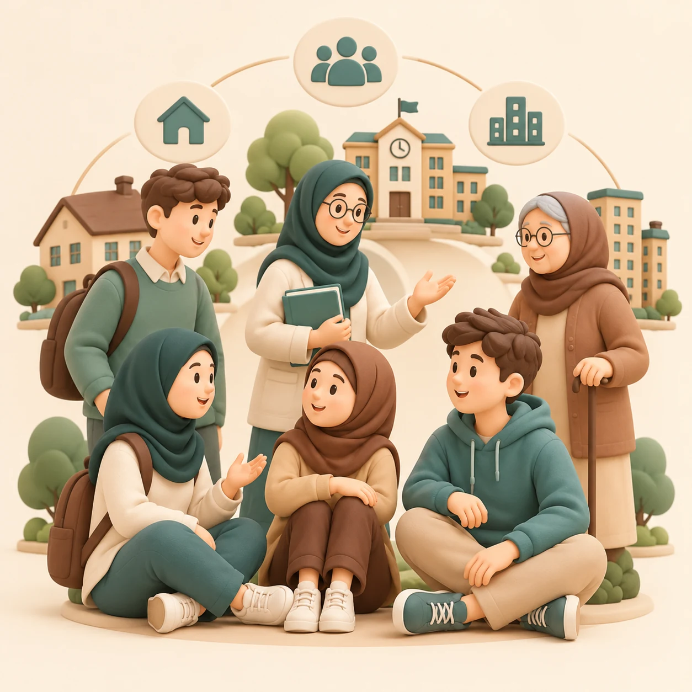

شناخت / ۰۱
جامعهای که در آن زندگی میکنیم
برای فهمیدن یک مسئله، اول باید آن را درست ببینیم.
آسیب اجتماعی به شرایط یا رفتارهایی گفته میشود که میتوانند به سلامت، امنیت، فرصتها یا روابط اعضای جامعه لطمه بزنند. این آسیبها معمولاً یک علت ساده ندارند؛ شرایط اقتصادی، تجربههای خانوادگی، محیط زندگی، فرصتهای آموزشی و حمایت اجتماعی میتوانند در کنار هم اثر بگذارند.
شاید تصور کنیم چنین موضوعاتی فقط به زندگی بزرگسالان مربوطاند، اما مدرسه، دوستیها، فضای مجازی و محلهای که در آن زندگی میکنیم، بخشی از همین جامعهاند. شناختن مسئله به معنی ترسیدن از آن نیست؛ یعنی بتوانیم نشانهها را بهتر تشخیص بدهیم و دربارهشان آگاهانه حرف بزنیم.